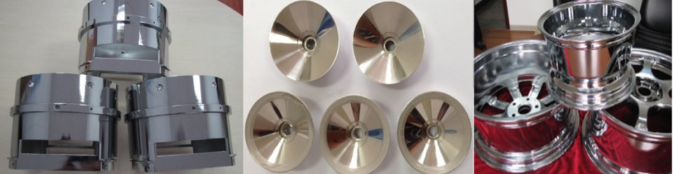
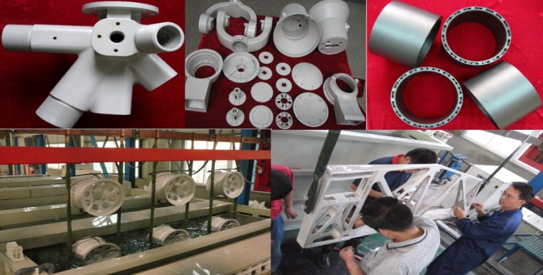
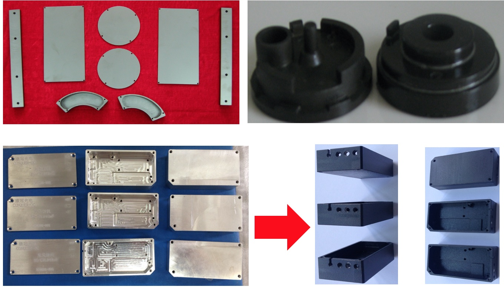
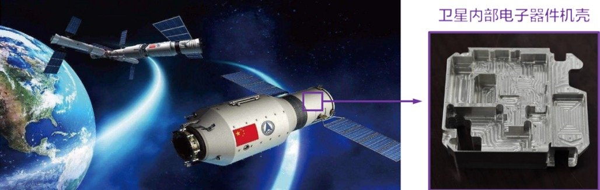

Transferable Technologies
Tech 01
High-Conductivity, Corrosion-Resistant Film Technology for Magnesium Alloy Products

Download Technical PDF
Tech 02
High-Performance "Synergistic Coating" Technology for Magnesium Alloy Products

Download Technical PDF
Tech 03
Rapid Hard Anodizing Technology for Aluminum Alloy Products

Download Technical PDF
Tech 04
High Infrared Emissivity and Conductivity Coating Technology for Metallic Materials

Download Technical PDF